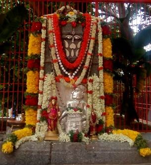
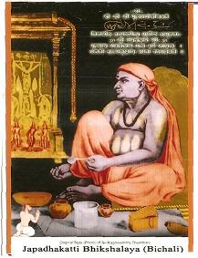

|
 |
|| BICHALI
JAPADAKATTI SRI APPANACHARYA PRIYA MANTRALAYA
SRI RAGHAVENDRATEERTHA GURUBHYO NAMAHA || Devotees
come to BICHALI - the place which is near and dear to Sri Rayaru and where Rayaru stayed for 13 years with Appanacharyaru ||
Rasa Rushihi Sri Appanacharyaha Devata
Sri Raghavendra Guruhu Mae Ishtaarthha Siddhaye|| |
347 Aradhana of Sri RaghavendraTeertharu
Rayara Parama Bhakta Bichali Japadakatti Sri Appanaryaru
When
we take the Name of
Mantralaya Sri Raghavendrateertha
Gurusarvabhoumaru the
Name of Bichali
Japadakatti Sri Appanacharyaru
automatically follows to the hearts of the devotees. The greatest and
the
dearest Devotee. When Sri Gururaya
thought of Mantralaya
sent a message to Diwan
Venkanna that he is
scheduled to visit Adoni
from Kumbhakonam. The Nawab of Adoni
and Diwan Venkannapanth warmly
welcomed with great devotion and grandeur. Rayaru
happily accepted the kind hospitality of the Nawab
Siddi Masoodkhan. Sri Raghavendrateertharu performed
the Pooja of Sri Moola
Rama Devaru in the
house of
Diwan Venkanna. Large
number of devotees witnessed this Pooja of Sri Moola
RamaDevaru by Rayaru. The
gratitude of Venkanna
cannot be described in words. Rayaru
asked Manchale as he
has
decided to reside there and enter Sashareera
Brindavan as per the
will and wish of Sri Hari. The Nawab
was reluctant to handover Manchale
as it was a barren land not fertile, only rocky bed on the bank of
Tungabhadra.
Rayaru said I want nly
this village and nothing more. Rayaru
knew the importance of that Siddhi place. So after a
few days along with Venkanna
Rayaru
while coming to Mantralaya
from Adoni,
the Aparoksha Gnyani Rayaru
came to know that, about a mile from Tungabhdara
Station. (Now Mantralaya
Road), there is Bichali
and a great devotee, scholar,
HariBhakta, Pratibhapurna
is staying in Bichali.
Also knew the importance of Japadakatti
and the greatness of :
Sri Vibudhendrateertharu,
Sri Sripadarajaru,
Sri Jitamitraru,Sri Vyasarajaru
Sri Appanacharyaru’s
open University at the Japadakatti.So
came to Bichali.
Bichali was
previously called as Bhikshalaya.
Appanacharya a great
scholar, though well off with three hundred acres of rich fertile land,
his Shishyas grew in
large number. Students from all parts of
the country came to Bichali
to learn and gain
Knowledge under the able teaching and guidance of Appanacharya.
So his income plan exceeded to feed the students. So asked the Shishyas to take rounds of Bhiksha
in the village to all the houses. As per the Upanayana
Upadesha it was a noble
thing to ask Bhiksha
not for lively hood, but for Vidya. It was a Sacred
scene to others that all the Housewives were eagerly
waiting to offer Bhiksha
to the Students of Appanacharya
before they were saying Om Bhavati
Bhikshan Dehi.
All
the respectable
families regarded the students of Appanacharya.
Though Bichali Japadakatti Appanacharya was a staunch
follower of Madhwa
Atreyasa Gotra - Rayara
Mutt and Jahagirdar of
twenty eight villages. Jahagirdar
of twenty eight
villages, with vast cultivation rich and fertile land in between
Krishna and
Tungabhadra, we can say DO AAB, never showed any greatness nor
proud, lived like an ordinary man. This simplicity made
him popular as a
great teacher. A Guru for all the times. His Bichali
Japadakatti on the
sacred bank of Tungabhadra under the Ashwath
Vruksha. The Gurukula of Sri Appanacharya was
nothing but an open university amidst the abundant mother
nature’s gift. His prayer, Mantra Siddhi, Kind concern and
the thirst of
Knowledge, obedience, pleasing
disposition made Bichali
Sri Appanacharya a Guru
of the Japadakatti
University. His modesty has
further expanded in making rice baked without the help of fire. The
washed rice
in the sacred Tungabhadra water will be tied in a big cloth something
like a jolige, and hangup to the branch
of the Ashwath Vruksha,
start teaching under the Shadow for two to three hours, after that Appanacharya praying Sri Annapurneshwari
will do Prokshana . The rice was baked properly,
ready for meals
. As per our Sri SriMadacharya’s
Sadaachara Pooja, Naivedya, Vaishwadeva, Hastodaka and then
used to take his lunch as well as dinner along with his dear students. Appanacharya
properly in the right way Sanmaarga.
When
Rayaru
came to Bichali and
came to know the details and the
sanctity of Japadakatti,
the sacredness of the house
of Appanacharya which
was already sixty years of old
attracted Rayaru very
much. The very first meeting of
these two great Stalwarts attracted each other affectionately was
nothing but
the boon of Sri Hari. Slowly their friendship grew thick and strong
reached a
point that they both cannot tolerate the separation of each other. The
obedience, loyal behavior, honesty, selfless seva
of Appanacharya was
liked by Rayaru.
Appanacharya himself was
grinding Dal Chatni to Rayaru as Rayaru liked it very much. Rayaru
performed the Pooja of Sri Moola
RamaDevaru
in the central Hall of Appanacharya
and used to sleep
and take rest there only. The Japadakatti
discourses
between each other and the bank of Tungabhdra
rivers
lullaby they both liked much. When Rayaru
was sitting
on the Japadakatti Appanacharya
simply squatted at the sacred feet of Rayaru
and
talking nicely. What an amount of subject matter they had to talk and
discuss.
In Sanskrit there is a Subhaashita : Vaade
Vaade
Jaayatae Tatvabodhaha. By
debate they used to find out the real truth. Appanacharya
gave his heart, mind and body to Rayaru.
Surprised to
see the works of Rayaru
not one but Fortyeight Granthas are there.
Simplified the Sudha of
Malkheda
Sri Jayatheertharu by
title Parimala.
“Pratyaksharam Pratipadam
Aneka Kooti Garbhita Pratinbhaati
Sudha Thaapi Granthalpatvaayanochyatae”.
Such are the works of Rayaru.
Rayaru’s
great creativity, divinity, Siddhi were all understood by Appanacharya.
The magnificent style of Praataha
Sankalpa
Gadya of Rayaru was nothing
but the Boon of Sri Hari Appanacharya
became too
close, associate, close associate. Appanacharya
was
massaging the sacred legs of Rayaru.
Rayaru also knew the
Knowledge, Ashukavitva,
Spontaneous creative
capacity of Appanacharya,
above all his Bhakti, obedience made Rayaru
to love Appanacharya
more. One day while Appanacharya
was doing the Seva of Rayaru
that is while massaging the legs
f Rayaru,
asked Appanacharya to
give up the habit of chewing Tobacco, Appanacharya
said that he had become a slave of it. Actually Rayaru
thought that Appanacharya
is the able person and he
has to give Yati Ashrama.
But hearing this from Appanacharya
Rayaru dropped the idea.
Appanacharya
was two years elder to Rayaru.
The Snake bill in the
house of Appanacharya
was very dear to Rayaru.
SheshaDevaru daily used
to come and drink the milk poured in the silver Harivaana
by Rayaru. Appanacharya’s
house was a sanctum of divnity.
So Rayaru lived there
for years together. Sri Raghavendrateertharu
pleased highly towards Appanacharya
and gave twelve acres of land situated in Kaldakuntla,
twelve kilometers from Mantralaya.
Appanacharya flatly refused,as
already he was owning abundant land. But Rayaru
forced Appanacharya to
accept, So he accepted
the land of Kaldakuntla
village. Bichali very
near to Mantralaya.
Though Mantralaya is in
Andhra Pradesh, Bichali
is in Karnataka.Raichur
District , via Gunjalli. Only the
river Tungabhadra is between Bichali
and Manchali.
When
the time of Brindavana Pravesha Rayaru
came to know, first Rayaru
dismantled the snake bill which was in the house of Appanna.
After him people will afraid of Snake. This snake was none but SheshaDevaru. Prayed a lot
before dismantling the snake
bill Hearing the Prayer Shesha
became a Shila Roopa. Rayaru
did the Pratishthaapana
of SheshaDevaru
at the back yard where the snakebill
was there.
Devotees we can see today. Dismantling of the snake bill made Appanacharya to suspicion, why Rayaru
is Dismantling. After
that one day Rayaru
asked Appanacharya to
go for Madhwa
Sanchara owing to the Chaturmaasa.
When so many are there! Why Rayaru
is asking me to go
he could not understand. But Obeyed
the verdict of Rayaru
and went. After his going Rayaru
called Venkanna and
announced the day of Brindavana
Pravesha on Shraavana Bahula Dwiteeya.
In the presence
of Appanacharya the Brindavana
Pravesha was highly
difficult Rayaru
knew. He cannot see and tolerate. He knew the Ability of Rayaru
and had that much of affect
on and liberty that he
should have simply brought him outside holding his hand. So Rayaru
Purposely sent Appanacharya
away from Mantralaya.After
sending his dearest devotee, asked Diwan
Venkanna to anounce the News of Brindavana Pravesha. Spread like a wild
fire, Hearing this shocking
news rushed to Bichali
and started crossing
Tungabhadra from Japadakatti
to reach Mantralaya, as
he was on the other side of the river.
Remembering his Guru, Crying and weeping Went on saying Gurustotra
by Ashukavitva, as Appanacharya
Knew Rayaru Completely
.But by the time Appanacharya
reached Mantralaya
the last slab was placed and he cannot see his Dear Rayaru.
After this he cannot pronounce any
thing more.
YoBhaktya Guru
Raghavendra Charana Dwandam SmaranYahaPathet
Stotram Divya Midam
Sada Nahibhavetassya
Asukham Kinchana
KimtvishtarthaSamruddhirevaKamalaNathaPrasadodayaat
Keertihi DigviditaVibhutiratula
Rayaru completed
Saying SAAKSHIHAYASTOTRAHI.Sitting
in the Brindavana
only. Such a great personality is our Bichali
Appanacharyaru.
In Bichali
the Tungabhadra river’s
soothing sound I feel Sri Harisarvottama
Vayjeevottama and Bichali Sri Appanacharya Priya Mantralaya Sri Raghavendrateertha
Gurubhyo Namaha. The Holy Madhwarayara Gundu and Sannyasikatti where Rayaru used
to sit meditate and ponder the rich philosophy of Sri Anandateertharu
and chat with Bichali
Sri Appanacharya
are in the sacred flow of Tungabhadra like an island today and mark the
glory
of the past. Though Rayaru
is in Brindavana
in Mantralaya, even
today at the holy Bichali
Japadakatti, the house
of
Sri Appanacharya many
devotees have witnessed the Sanchaara
of Gururaya in Jyoti Roopa. We are grateful and proud
to have all this rich
heritage and divine legacy. Japadakatti
Ek Shila Brindavana
is too adjacent to the river, Tungamma
is allowing
the devotees to take the holy dip. The immense silence and the profound
calmness is welcoming the world devotees without any prachaara.
The Sober, Satvika Sajjana Vamshashtharu
of Sri Appanacharya
are describing in detail and advocat
ng the Siddhi of
Sri Sripadarajaru, Sri Vyasarayaru,
Sri Jitamitrateertharu
and our Sri Raghavendrateertharu.
Bichali Japadakatti Siddhi Kshetra ¬ Saadhana of the greatest Devotee
Sri Appanacharya
a great devotee of Rayaru.
To propitiate Rayaru,
to gain the Anugraha of
Rayaru, we have to the
chant and perform the pathana
of Gurustotra of Appanacharya.It is most
essential. Our Sondur
Sri Krishnavadhootaru
and Ibharamapura’s
Sri Krishnacharya ¬ Appa
have shined by this Gurustotra:
Sri
GurustotropyetaatPrabhratiVishwasan
GurustotramaehaavamPathanGurumPoojayamGurumPoojayam
Appanacharya Gurustotram
Sarveshta Saadhakam
By
Gurustotra
Pathana our life will be
complete with all the
requirements and desires will be fulfilled. Gurustotra
is Sarvswa to the world
devotees today. To attain the
Affection Anugraha of Mantralaya
Sri Raghavendrateertharu
Appanacharya’s
Gurustotra is the main
source to all of us. Amidst
the tens and thousands of names of devotees that crowd the list of
devotees the
name of Bichali Appanacharya
will always shine like the Dhruva Nakshatra.
A Stotra and Mangalashtaka, Dandaka, Kavacha
are the valuable
contributions of Bichali
Appanacharyaru.
We are highly grateful to Bichali
Appanacharyaru
chanting this Quick Siddhi MahaMantra
QSM we acquire
desired things in life by Mantralaya
Rayaru.
|| BICHALI
JAPADAKATTI SRI
APPANACHARYA PRIYA
MANTRALAYA
SRI RAGHAVENDRATEERTHA
GURUBHYO NAMAHA ||
(
Chanting this Quick Siddhi Mantra we acquire desired
things in life)

|
Copyright
@2008 https://patwari.org |